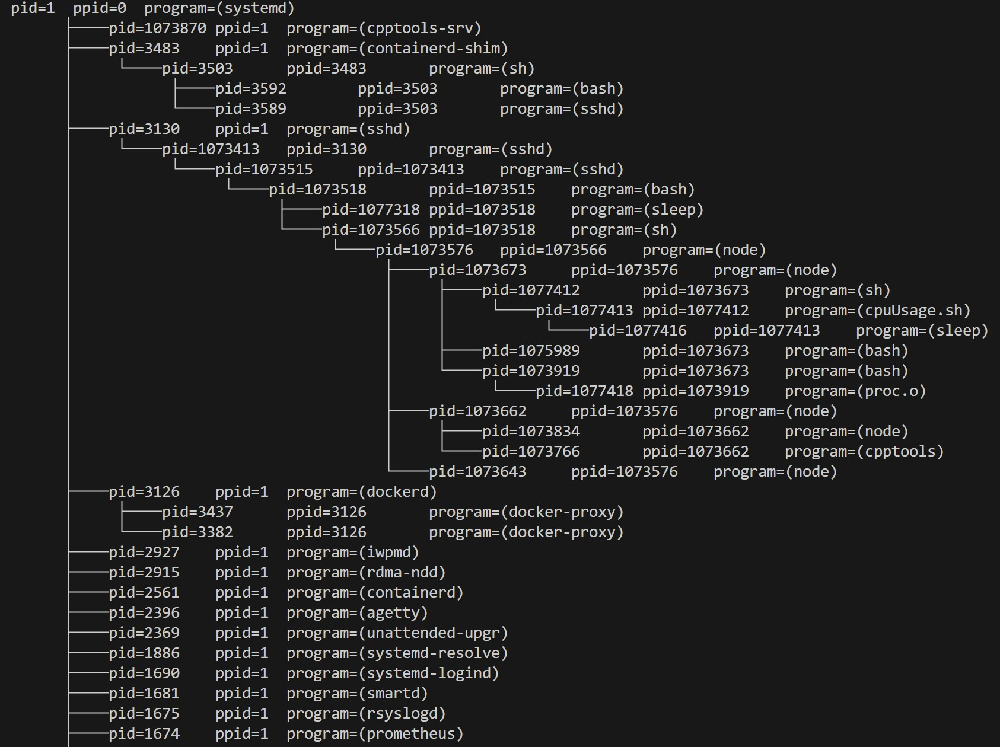

Redalpaca's Blog
Hi👋, welcome to alpaca land.

On linux platform, process infomation is stored at /proc/pid/stat, we can read it as a file, which achieves the unification of interfaces.
The infomation of porc is organized as (unfinished):
typedef struct procInfo {
int pid; /** The process id. **/
char comm[_POSIX_PATH_MAX]; /** The filename of the executable **/
char state; /** R is running, S is sleeping, D is sleeping in an uninterruptible wait, Z is zombie, T is traced or stopped **/
int ppid; /** The pid of the parent. **/
int pgrp; /** The pgrp of the process. process group**/
int session; /** The session id of the process. **/
int tty; /** The tty the process uses **/
int tpgid; /** (too long) **/
unsigned int flags; /** The flags of the process. **/
unsigned int minflt; /** The number of minor faults **/
unsigned int cminflt; /** The number of minor faults with childs **/
unsigned int majflt; /** The number of major faults **/
unsigned int cmajflt; /** The number of major faults with childs **/
int utime; /** user mode jiffies **/
int stime; /** kernel mode jiffies **/
int cutime; /** user mode jiffies with childs **/
int cstime; /** kernel mode jiffies with childs **/
int counter; /** process's next timeslice **/
int priority; /** the standard nice value, plus fifteen **/
int nice;
int num_threads;
int itrealvalue; /** The time before the next SIGALRM is sent to the process **/
int starttime; /** Time the process started after system boot **/
unsigned int vsize; /** Virtual memory size **/
unsigned int rss; /** Resident Set Size **/
unsigned int rsslim; /** Current limit in bytes on the rss **/
unsigned int startcode; /** The address above which program text can run **/
unsigned int endcode; /** The address below which program text can run **/
unsigned int startstack; /** The address of the start of the stack **/
unsigned int kstkesp; /** The current value of ESP **/
unsigned int kstkeip; /** The current value of EIP **/
int signal; /** The bitmap of pending signals **/
int blocked; /** The bitmap of blocked signals **/
int sigignore; /** The bitmap of ignored signals **/
int sigcatch; /** The bitmap of catched signals **/
/** TODO **/
} sProcInfo, *pProcInfo;
Only catch some infomations for show, so the struct will be like:
typedef struct ProcInfo
{
string name;
pid_t pid;
pid_t ppid;
size_t virt;
size_t rss;
} sProcInfo, *pProcInfo;
The following function is to read /proc/[PID]/stat
pProcTree readProcStat(string path)
{
FILE *fp;
pProcTree pNode = new ProcTree();
if(path.length() > MAX_PATH_LEN) {
return NULL;
}
fp = fopen(path.c_str(), "r");
char temp[256];
fscanf(fp, "%d %s %*c %d %*d %*d %*d %*d %*u %*u \
%*u %*u %*u %*u %*u %*d %*d %*d %*d %*d \
%*d %*u %zu %zu %*u",
&pNode->procInfo.pid, temp, &pNode->procInfo.ppid, &pNode->procInfo.virt, &pNode->procInfo.rss);
pNode->procInfo.name = temp;
pNode->pid = pNode->procInfo.pid;
// cout << temp ;
fclose(fp);
return pNode;
}
Set a ProcTree struct as wrapper, to carry procInfo and child / brother infomations.
struct ProcTree represents a Node of a ProcTree, only deploying 2 simple method.
Use head-insert to create brother link-list
The idea to create tree is easy:
hashmap[ppid], a insert itself to the parent.typedef struct ProcTree
{
pid_t pid;
struct ProcTree *child;
struct ProcTree *brother;
bool visited = false;
sProcInfo procInfo;
void addChild(struct ProcTree *pNode)
{
if (pNode->pid == this->pid)
return;
if (!this->child)
{
this->child = pNode;
}
else
{ // head insert
pNode->brother = this->child;
this->child = pNode;
}
}
void showInfo(string prefix)
{
cout << prefix << "pid=" << this->procInfo.pid << "\tppid=" << this->procInfo.ppid << "\tprogram=" << this->procInfo.name << endl;
}
void showInfo()
{
cout << this->procInfo.pid << '\t' << this->procInfo.ppid << '\t' << this->procInfo.name << endl;
}
} sProcTree, *pProcTree;
As Article "Linux process tree (1)" said, the key is "brother"
The current prefix depends on current root's brother.
Print argument prefix + current prefix, their will be pretty "branches" shown.
Here's the whole printer class:
class ProcPrinter
{
public:
map<pid_t, pProcTree> procMap;
vector<pProcTree> procList;
ProcPrinter()
{
this->__init_procList__();
this->__init_procMap__();
this->__create_procTree__();
}
~ProcPrinter()
{
// todo
}
void show(pid_t pid)
{
string prefix = " ";
this->__print_procTree__(this->procMap[pid], 0, prefix);
}
void show()
{
string prefix = " ";
this->__print_procTree__(this->procMap[1], 0, prefix);
}
private:
void __init_procList__()
{
struct dirent *entry;
DIR *procdir;
procdir = opendir("/proc");
char path[MAX_PATH_LEN];
while ((entry = readdir(procdir)))
{
if (!is_pid(entry))
continue;
snprintf(path, sizeof(path) + 1, "/proc/%s/stat", entry->d_name);
string path_str = path;
pProcTree pNode = readProcStat(path_str);
this->procList.push_back(pNode);
}
}
void __init_procMap__()
{
for (auto i = 0; i < this->procList.size(); i++)
{
pProcTree pNode = procList[i];
this->procMap[pNode->pid] = pNode;
}
}
void __create_procTree__()
{
for (map<pid_t, pProcTree>::iterator it = this->procMap.begin(); it != this->procMap.end(); it++)
{
pid_t pid = it->first;
pProcTree pNode = it->second;
// if(! this->procMap.find(pNode->procInfo.ppid)) {
// continue;
// }
pProcTree parent = this->procMap[pNode->procInfo.ppid];
if (parent)
{
parent->addChild(pNode);
}
}
}
void __print_procTree__(pProcTree root, int depth, string prefix)
{
if (!root)
{
return;
}
string prefix_cur = prefix + (root->brother ? "├────" : "└────");
string prefix_next = prefix + (root->brother ? "│ " : " ");
if (!depth)
{
prefix_cur = prefix;
}
root->showInfo(prefix_cur);
// recursion
this->__print_procTree__(root->child, depth + 1, prefix_next);
if (root->child)
{
pProcTree child = root->child;
while (child->brother)
{
this->__print_procTree__(child->brother, depth + 1, prefix_next);
child = child->brother;
}
}
}
};
int main(int argc, char *argv[])
{
ProcPrinter *procPrinter = new ProcPrinter();
if (argc <= 1)
{
cout << "Require argument: process ID" << endl;
}
else
{
pid_t pid = atoi(argv[1]);
procPrinter->show(pid);
}
return 0;
}
{kind=link}